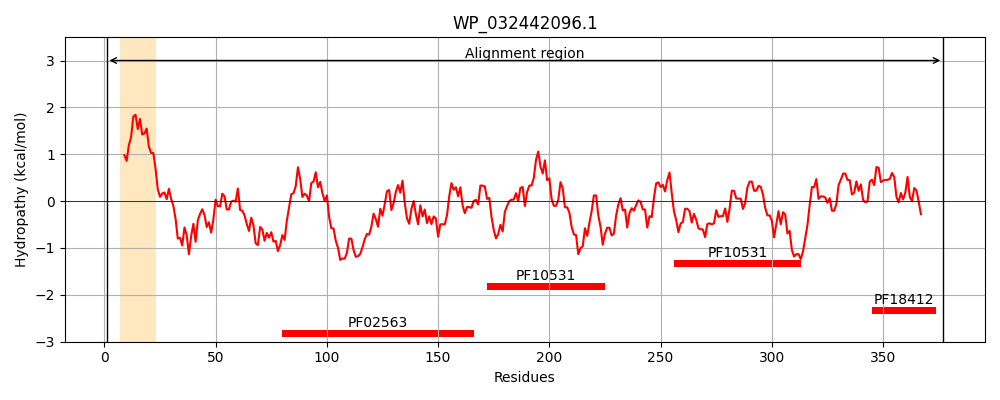
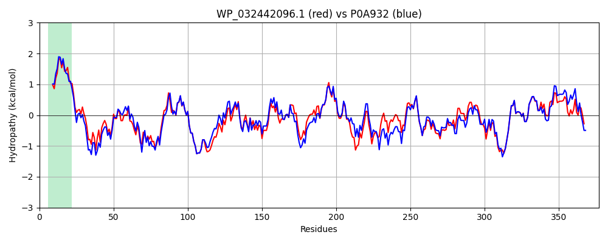

Hit Accession: P0A932
Hit TCID: 1.B.18.3.8
Hit Description: gnl|BL_ORD_ID|8627 gnl|TC-DB|P0A932|1.B.18.3.8 Putative polysaccharide export protein GfcE OS=Escherichia coli (strain K12) GN=gfcE PE=3 SV=1
Mach Len: 377
e:0.000000
Query TMS Count : 1
Hit TMS Count: 1
TMS-Overlap Score: 0.850000
Predicted Substrates:CHEBI:61650;[3)-beta-D-galactopyranuronosyl-(1->3)-2-acetamido-4-amino-2,4,6-trideoxy-alpha-D-glucopyranosyl-(1->4)-beta-D-galactopyranurosyl-(1->]n
BLAST Alignment:
Score: 1526 , Bit scores: 592 bits, E-value: 0.0e+00, Alignment length: 377, Percentage identity: 75
Query: 1 MKKKLVRFSALALAIGFLSGCTIIPGQGLNSLRKNVVELPDSDYDLDKLVNVYPMTPGLIDQLRPETVLARPNPQLDNLLRSYEYRIGVGDVLMVTVWDHPELTTPAGQYRSASDTGNWVNSDGTIFYPYIGKLQVAGKTLSQVRQDIASRLTTYIESPQVDVSVAAFRSQKAYVTGEVVKSGQQPITNIPLTVMDAINAAGGLAPDADWRNVVLTHDGKDTKVSLYALMQKGDLSQNHLLYSGDILFVPRNDDLKVFVMGEVGKQSTMKMDRSGMTLAEAISNAEGMSQAFSDATGVFVIRQLKDDKNGKIANVYQLNAQDASAMVLGTEFQLQPYDIVYVTSAPIVRWNRVISQLVPTITGVHDMTETAKFIRTW 377
MKK + +FS L LA+ L+ CT++PGQ L++ K+V+ELPD+ YDLDK+VN+YP+TPGLIDQLR + ++++ NP+L+ + +YEYRIG+GDVLMVTVWDHPELTTPAGQYRSASDTGNWVN+DG IFYPYIG+L+VAGKTL+QVR +I +RL + IESPQVDVSVAAFRSQKAYVTGEV KSGQQPITNIPLT+MDAINAAGGL DADWRNVVLT +G TKV+LYALMQ+GDL QN LL+ GDILF+PRNDDLKVFVMGEVGKQST+KMDRSGMTLAEA+ NAEGM+Q +DATG+FVIR ++ +NGKIAN+YQLNA+DASAM+LGTEFQL+PYDIVYVT+AP+ RWNRVIS LVPTI+GVHD+TET+++I+TW
Sbjct: 1 MKKNIFKFSVLTLAVLSLTACTLVPGQNLSTSNKDVIELPDNQYDLDKMVNIYPVTPGLIDQLRAKPIMSQANPELEQQIANYEYRIGIGDVLMVTVWDHPELTTPAGQYRSASDTGNWVNADGAIFYPYIGRLKVAGKTLTQVRNEITARLDSVIESPQVDVSVAAFRSQKAYVTGEVSKSGQQPITNIPLTIMDAINAAGGLTADADWRNVVLTQNGVKTKVNLYALMQRGDLRQNKLLHPGDILFIPRNDDLKVFVMGEVGKQSTLKMDRSGMTLAEALGNAEGMNQDVADATGIFVIRATQNKQNGKIANIYQLNAKDASAMILGTEFQLEPYDIVYVTTAPLARWNRVISLLVPTISGVHDLTETSRWIQTW 377 | Protein Hydropathy Plots: |
|---|
|  |  |
Pairwise Alignment-Hydropathy Plot:
|
|---|
|  |